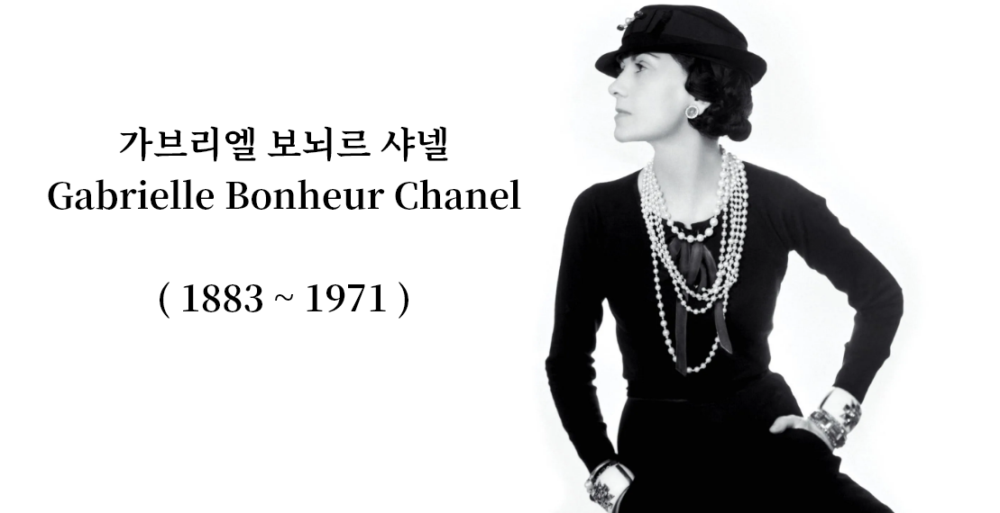

소개
Introduce

LIFE
1883년 8월 19일 프랑스 남서부의 오벨뉴 지방의 소뮈르에서 출생하였다.
12세에 모친이 사망하는 바람에, 가난에 시달리던 집안에서는 어린 그녀를 수녀원의 고아원에 맡겨지게 되었다.
그렇게 그녀는 불우한 어린 시절을 보내다가 고아원에서 도망치게 되었다.
그러나, 시골마을인 물랑에서 바느질하는 노동자로 당시 그녀를 후원한 한 장교에 의해 예능계에 재능을 각성하게 되었다.
이후로 가수를 지망하게 되며, 카바레에서 노래하던 그녀는 'Ko Ko Ri Ko'와 'Qui qu'a vu Coco dans le Trocadero'라는 노래의 가사에서 자신의 예명인 " 코코"를 이름 앞에 붙여 사용했다. 그 후 예능계의 길을 잠시 접고 당시 교제중이던 장교인 에튀엥느 발장에 의해 파리근교로 이주하여 사교계로 이용되던 발장의 목장에서 머물렀다.
여기서 따분한 시간을 보내던 샤넬은 여성들의 불편한 복장에 대해 생각하게 되었다. 먼저 모자의 디자인에 영감을 받아 발장의 친구 보이(아서 카펠)의 후원으로 1909년에 마르젤브 거리 160번지에 모자가게를 개업했다.
1910년에 파리의 캉봉거리 21번지에 "샤넬 모드"라는 모자 전문점을 개업한 샤넬은 이때 발장과 헤어져 평생 연인으로 지낸 영국의 청년사업가인 아서 카펠과 교제를 시작했다. 샤넬 모두의 개업 자금은 카펠의 후원이었다.
샤넬의 모자가 잘 팔리자, 샤넬은 복장 사업을 시작했고 그녀가 만들어낸 의상은 코르셋을 없앴기에 편하다며 여성들에게 극찬을 받았다.
이때부터 펼쳐진 그녀의 복장 사업은 현대 여성복에 지대한 영향을 끼친 사람이자, 연인들에게 둘러싸여 독립적이면서도 창조적인 삶을 살아간 여인이 되었다.